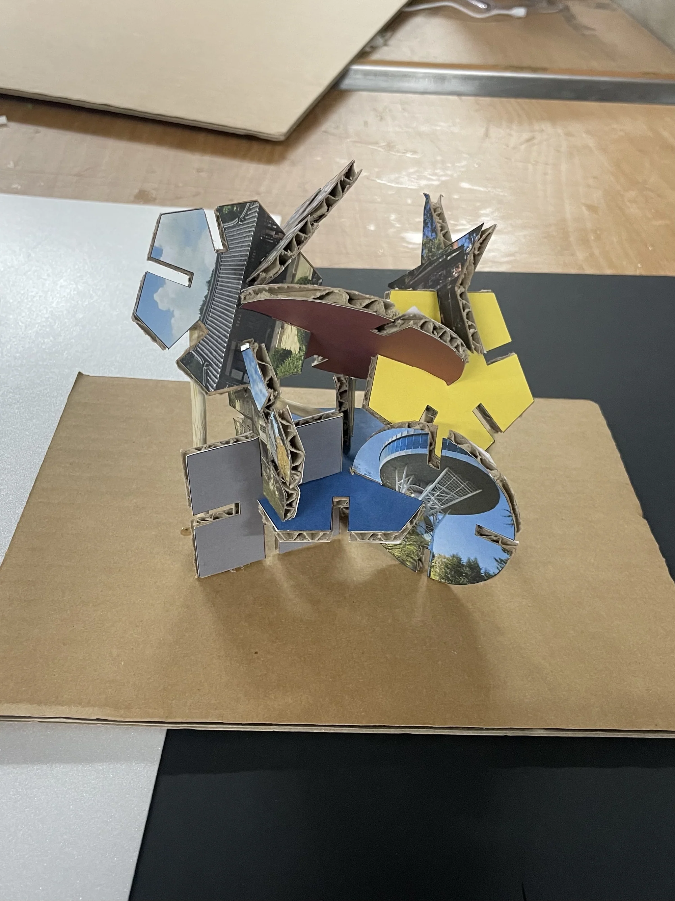

ARTEFACT PROJECT / SHELTER
We Are Combined
양림동의 서로 다른 시간과 이야기가 만나는 나무 아래, 사람들이 쉬고 교류할 수 있는 작은 쉼터를 제안했습니다.
- YEAR / SEMESTER
- 2학년 2학기 · 2024
- PROJECT TYPE
- 쉼터 · 공공공간
- CONTRIBUTION
- 개인 설계
- SITE / SUBJECT
- 광주광역시 남구 양림동

THE IDEA
생각의 출발점
양림동의 역사와 마을 사람들의 일상에서 COMBINE의 의미를 찾았습니다. 나무 아래에서 만나고 쉬는 경험을 바탕으로 다양한 벽과 틈, 재료가 어우러지는 쉼터를 계획했습니다.
- 01
마을 읽기
현장 관찰과 대지 분석으로 양림동의 역사, 동선, 풍경을 살폈습니다.
- 02
이야기의 조합
서로 다른 형태와 재료의 결합으로 마을의 다양한 시간을 표현했습니다.
- 03
머무는 장소
등을 기댈 수 있는 자리와 열린 틈, 나무와 이어지는 공간을 도면과 모형으로 검토했습니다.
PROCESS & OUTCOME
과정과 결과
사진을 누르면 크게 볼 수 있습니다.